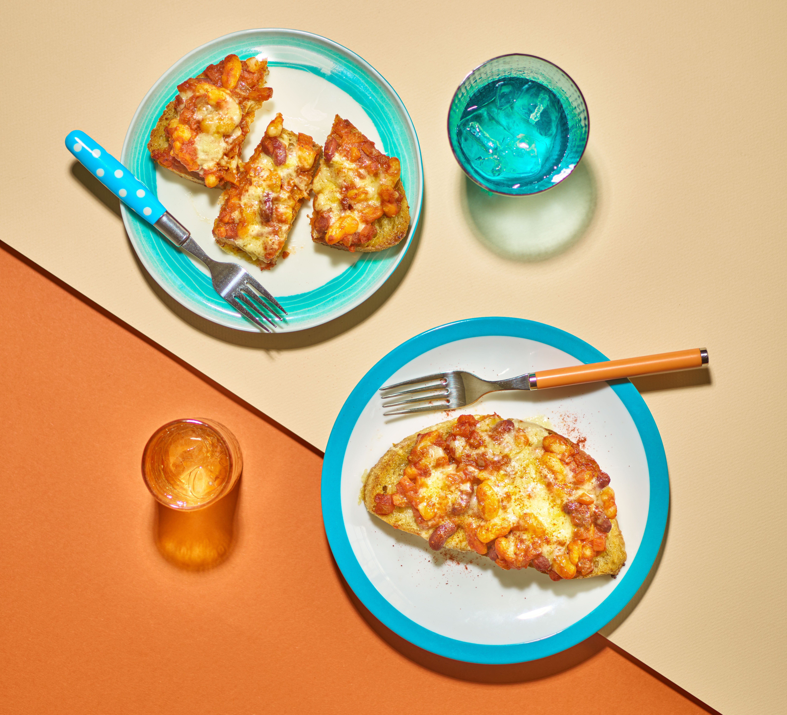

Toast

Description
Cheesy beans on toast, which is obviously the best toast
Ingredients
- 2 tbsp vegetable oil
- 1 large onion
- 4 garlic cloves
- 1 tsp smoked paprika
- 1 tsp ground cumin
- chipotle chilli paste
- 200g can chopped tomatoes
- 2 x 400g cans of beans
- 4-8 slices of bread
- 150g grated cheddar
Steps
- Heat the oil in a heavy-based frying pan over a medium heat and fry the onion for 8-10 mins until softened and slightly caramelised. Add the garlic and spices, the chipotle chilli paste or chilli flakes, if using, and some seasoning. Fry for a few minutes more until the mixture is fragrant.
- Add the tomatoes, then swirl out the pan using 100ml water and add this too. Simmer for 10-15 mins until the mixture has thickened. Blitz the sauce using a hand blender, then taste for seasoning. Tip in the beans and mix well to coat. Warm through over a medium heat for 5 mins until the beans are piping hot.
- Heat the grill to high and toast the bread slices for 3-5 mins. Top with the beans and grated cheese, and pop under the grill until the cheese is melted and bubbling. Sprinkle with a little paprika and serve immediately.